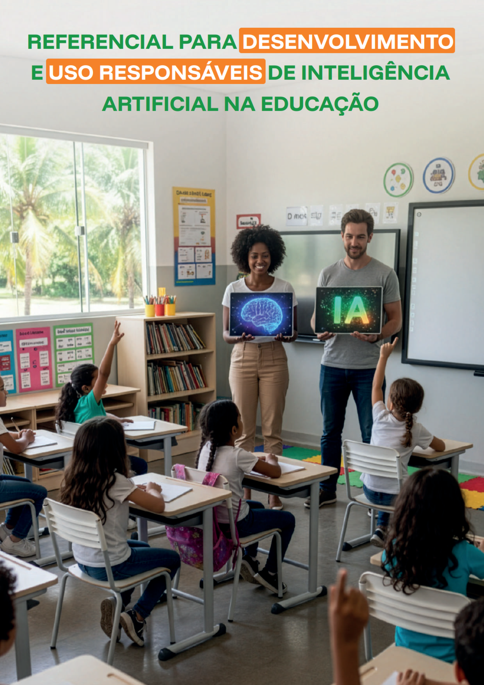

IA é meio, não fim
A integração só faz sentido quando subordinada ao projeto pedagógico, ao direito à educação, à inclusão e à melhoria efetiva do ensino.
O referencial do MEC organiza a discussão em torno de uso responsável, centralidade do professor, governança institucional, proteção de dados, equidade e formação crítica para todos os níveis de ensino.
No ensino superior, o recado é ainda mais claro: universidade não pode só usar ferramenta. Tem de formar pessoas capazes de avaliar, governar, pesquisar e desenvolver IA.

Lembre da capa do documento oficial. É ela que organiza esta síntese.
O referencial trata IA como questão de política educacional.
A integração só faz sentido quando subordinada ao projeto pedagógico, ao direito à educação, à inclusão e à melhoria efetiva do ensino.
O documento insiste em supervisão humana significativa, preservação da autonomia docente e uso da tecnologia como apoio qualificado ao trabalho pedagógico.
Transparência, explicabilidade, proteção de dados, avaliação de impacto e responsabilização institucional vêm antes do deslumbre com plataforma.
Não são slogans. São usos concretos, com condição e limite.
Aqui o MEC espera densidade
O documento conversa diretamente com iniciativas que articulam ensino, cuidado e tecnologia.
O uso de IA precisa estar vinculado a objetivos formativos claros, não a automatismos vazios. Isso vale ainda mais em saúde.
Em contextos clínicos, educativos e comunitários, IA pode apoiar triagem, organização e estudo, mas decisão e responsabilidade seguem humanas.
Projetos em telemonitoramento, cuidado e educação em saúde precisam olhar para proteção de dados, vieses, acessibilidade e efeito real sobre a qualidade do cuidado.